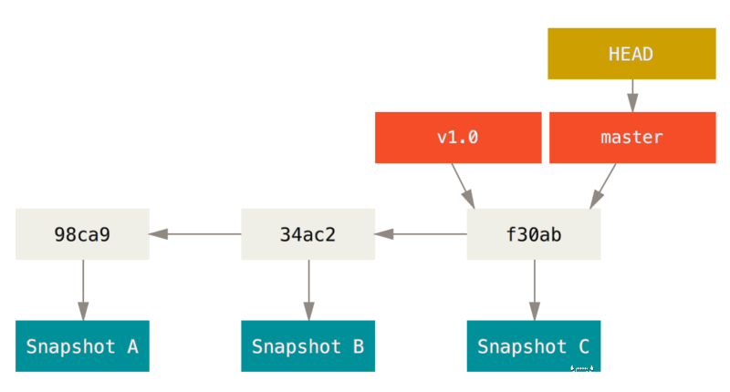
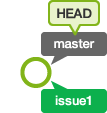
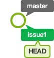
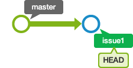
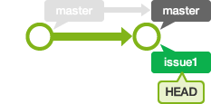
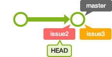
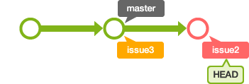
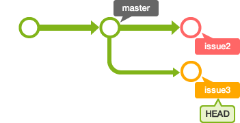

Git是一个分布式版本管理系统，是为了更好地管理Linux内核开发而创立的。
Git可以在任何时间点，把文档的状态作为更新记录保存起来。因此可以把编辑过的文档复原到以前的状态，也可以显示编辑前后的内容差异。
而且，编辑旧文件后，试图覆盖较新的文件的时候（即上传文件到服务器时），系统会发出警告，因此可以避免在无意中覆盖了他人的编辑内容。
分支管理
Git 的分支模型是它的必杀技特性，它处理分支的方式是难以置信的轻量，创建分支几乎是在一瞬间完成，而且在不同分支间的切换也非常的便捷
下图是一个工作流，可以看到所谓的分支实际上就是一个可以移动的指针而已，master、v1.0都仅仅是一个指针，而创建分支、切换分支等操作也都只是对指针的操作，因此就不奇怪为什么 Git 这么快了。

那么 Git 又是如何知道当前在哪一个分支上呢？它仅仅是用了一个名为HEAD的特殊指针，可以将HEAD想象为当前分支的别名，HEAD指向哪个分支，就表示当前处于哪个分支。
A successful Git branching model

- 主分支
主分支有两种：master分支和develop分支
- master
master分支只负责管理发布的状态。在提交时使用标签记录发布版本号。
- master
- develop
develop分支是针对发布的日常开发分支。刚才我们已经讲解过有合并分支的功用。
- develop
特性分支
这个分支是针对新功能的开发，在bug修正的时候从develop分支分叉出来的。基本上不需要共享特性分支的操作，所以不需要远端控制。完成开发后，把分支合并回develop分支后发布。
- release分支
release分支是为release做准备的。通常会在分支名称的最前面加上release-。release前需要在这个分支进行最后的调整，而且为了下一版release开发用develop分支的上游分支。
一般的开发是在develop分支上进行的，到了可以发布的状态时再创建release分支，为release做最后的bug修正。
到了可以release的状态时，把release分支合并到master分支，并且在合并提交里添加release版本号的标签。
要导入在release分支所作的修改，也要合并回develop分支。
- hotFix分支
hotFix分支是在发布的产品需要紧急修正时，从master分支创建的分支。通常会在分支名称的最前面加上 hotfix-。
例如，在develop分支上的开发还不完整时，需要紧急修改。这个时候在develop分支创建可以发布的版本要花许多的时间，所以最好选择从master分支直接创建分支进行修改，然后合并分支。
修改时创建的hotFix分支要合并回develop分支。
0. 事前预备
首先建立一个新目录，并在里面建立一个空数据库。这里我们创建一个名为tutorial的目录。
1 | mkdir tutorial |
在tutorial目录创建一个名为myfile.txt的档案，然后提交。
1 | 连猴子都懂的Git命令 |
目前的历史记录是这样的。
1. 建立分支
创建名为issue1的分支。
您可以通过branch命令来创建分支。
1 | git branch <branchname> |
创建名为issue1的分支。
1 | git branch issue1 |
不指定参数直接执行branch命令的话，可以显示分支列表。 前面有*的就是现在的分支。
1 | git branch |
目前的历史记录是这样的。

2. 切换分支
若要在新建的issue1分支进行提交，需要切换到issue1分支。
要执行checkout命令以退出分支。
1 | git checkout <branch> |
切换到issue1分支。
1 | git checkout issue1 |
目前的历史记录是这样的。

Note
在checkout命令指定 -b选项执行，可以创建分支并进行切换。
1 | $ git checkout -b <branch> |
在切换到issue1分支的状态下提交，历史记录会被记录到issue1分支。在myfile.txt添加add命令的说明后再提交。
1 | Git命令 |
目前的历史记录是这样的。

3. 分支的合并
向master分支合并issue1分支的修改。

执行merge命令以合并分支。
1 | git merge <commit> |
该命令将指定分支导入到HEAD指定的分支。先切换master分支，然后把issue1分支导入到master分支。
1 | git checkout master |
打开myfile.txt档案以确认内容，然后提交。
1 | Git命令 |
已经在issue1分支进行了编辑上一页的档案，所以master分支的myfile.txt的内容没有更改。
1 | git merge issue1 |
master分支指向的提交移动到和issue1同样的位置。这个是fast-forward（快进）合并。

打开myfile.txt档案，确认内容。
1 | Git命令 |
已添加「add 把变更录入到索引中」。
4. 删除分支
既然issue1分支的内容已经顺利地合并到master分支了，现在可以将其删除了。
在branch命令指定-d选项执行，以删除分支。
1 | $ git branch -d <branchname> |
执行以下的命令以删除issue1分支。
1 | $ git branch -d issue1 |
issue1分支被删除了。您可以用branch命令来确认分支是否已被删除。
1 | $ git branch |
5. 并行操作
接下来，创建2个分支来尝试并行操作吧。
首先创建issue2分支和issue3分支，并切换到issue2分支。
1 | git branch issue2 |

在issue2分支的myfile.txt添加commit命令的说明后提交。
1 | 连猴子都懂的Git命令 |

接着，切换到issue3分支。
1 | git checkout issue3 |
打开myfile.txt档案。由于在issue2分支添加了commit命令的说明，所以issue3分支的myfile.txt里只有add命令的说明。
添加pull命令的说明后提交。
1 | 连猴子都懂的Git命令 |

这样，添加commit的说明的操作，和添加pull的说明的操作就并行进行了。
当然理想情况下是直接合并成功，但是不免会遇到合并冲突的情况，一旦遇到冲突了，Git 会像下面这样来标记冲突内容，你需要做的是选择由=======分割的令部分的其中一个或者自行合并，当<<<<<<<，=======，和>>>>>>>这些行被完全删除了，你需要对每个文件使用git add将其标记为冲突已解决。
1 | <<<<<<< HEAD:index.html |
当合并完分支后，之前的分支一般就不会再要了，这时可以运行git branch -d [branch-name]来删除指定分支，比如使用git branch -d testing来删除testing分支。
Git 常用命令
| 命令 | 作用 |
|---|---|
git init |
将一个目录转变成一个 Git 仓库 |
git clone |
从远程克隆一个仓库到本地，它是多个命令的组合 |
git add |
将内容从工作目录添加到暂存区 |
git commit |
将暂存区文件在数据库中创建一个快照，然后将分支指针移到其上 |
git commit -a -m [msg] |
git add和git commit的组合 |
git status |
展示工作区及暂存区域中不同状态的文件 |
git status -s |
比git status展示的内容更加简洁 |
git diff |
对比工作目录文件和暂存区快照之间的差异 |
git diff --cached |
对比已暂存的差异 |
git reset |
根据你传递给动作的参数来执行撤销操作 |
git rm |
从工作区，或者暂存区移除文件 |
git clean |
从工作区中移除不想要的文件的命令 |
git checkout |
切换分支，或者检出内容到工作目录 |
git branch |
列出你所有的分支、创建新分支、删除分支及重命名分支 |
git checkout -b [branch] |
创建新分支并切换到该分支 |
git log |
展示历史记录 |
git log --pretty=oneline |
简洁版历史记录 |
git merge |
合并一个或者多个分支到已检出的分支中 |
git stash |
临时地保存一些还没有提交的工作 |
git pull |
git fetch 和 git merge 命令的组合体 |
git push |
将本地工作内容推送到远程仓库 |
git push origin local_branch:remote_branch |
比git push更加详细的推送 |
git checkout --track [remote-name]/[branch] |
在本地创建一个分支用于跟踪远程同名分支 |